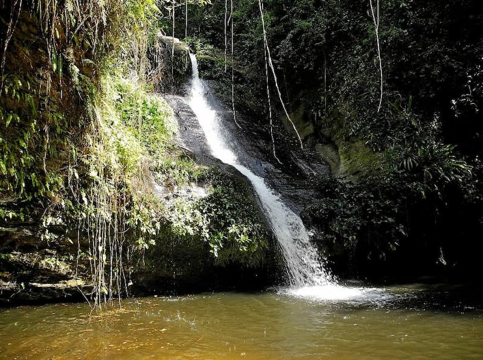

Data
- Area: 56,785 sq km
- Population: 8.8 million
- Capital: Lomé
- Languages: French, Ewe, Kabyè
- Currency: West African CFA franc
- Time Zone: UTC+0
- Calling Code: +228
- Internet TLD: .tg
Weather
- Temperature: 28°C
- Conditions: Tropical / Humid
- Wind: 10 km/h
- Wind Chill: N/A